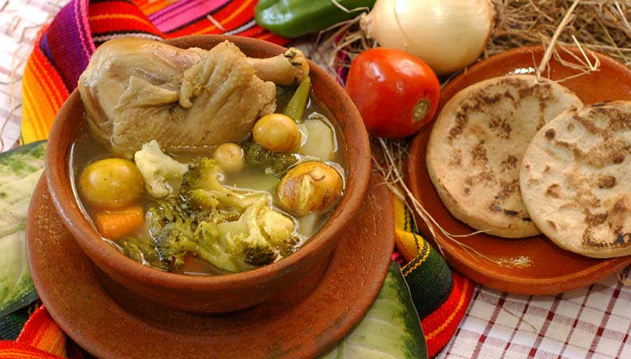

Aqui estan nuestras recetas.
Tenemos disponibles los diferentes catalogos de recetas.



Sopas
Son muchas las recetas de sopas salvadoreñas, pero lo cierto es que las hay mas preferidas unas que otras.
Ver más